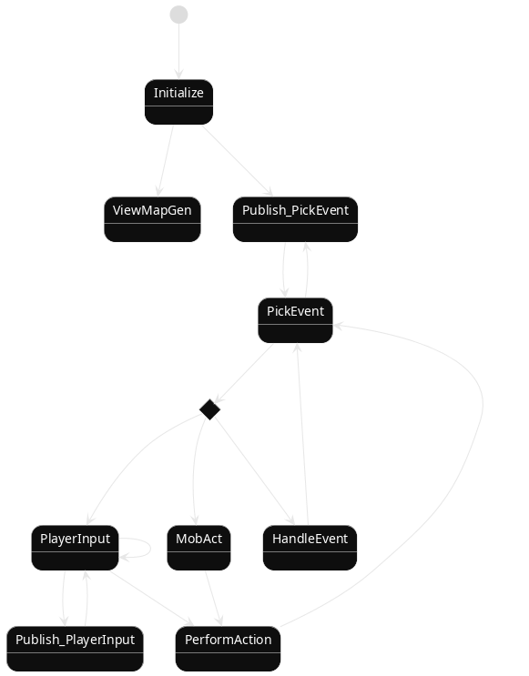

- related to Roguelike, Game Development
- under Blog, Devlog
- follows How the Game State Is Driven
I realize that my previous design has a big issue: it cannot handle effects with delays.
Consider the following example:
- Gravity is applied to entities that are not standing on the ground. For each of them, for each decreasing period of time, it falls down by 1 unit.
- Toxic is applied to entities that are attacked this way. For a fixed period of time, for each of them, it is damaged by a various number.
Moreover, some effects can in essence trigger other effects. For example, when a vehicle moves, things on top of it move together with it.
As an extra bonus, an action's effect can be delayed. For example:
- Entity can sleep, and the bonus of well sleeping is gained at the time of waking up.
- Charged attack with heavy weapon, high-ranked spells, etc
It's also great if the state machine supports showing some causality. For example, an successful attack should eventually produce a message containing all the damage numbers, format in a well-designed way.
Updated State Machine
skinparam BackGroundColor transparent
skinparam monochrome reverse
[*] --> Initialize
Initialize --> ViewMapGen
Initialize --> Publish_PickEvent : Play
Publish_PickEvent --> PickEvent
state p <<choice>>
PickEvent --> p
p --> PlayerInput : Need \n player \n input
p --> MobAct : Need \n Mob \n action
p --> HandleEvent
PlayerInput --> PlayerInput
PlayerInput --> Publish_PlayerInput
Publish_PlayerInput --> PlayerInput
PlayerInput --> PerformAction
MobAct --> PerformAction
PerformAction --> PickEvent : Translate\nto\nevent
HandleEvent --> PickEvent : event with zero delay available
PickEvent --> Publish_PickEvent

When
Should Make Transition to PlayerInput and
MobAct
Players and mobs have an Actor
component which has a timestamp.
At the PickEvent state, the game first
searches through all entities with Actor
component that do not have a decided action, and pick one with the
earliest timestamp.
The game also go through all events, and pick one with the earliest timestamp.
If the actor's timestamp is earlier than the event's, make transition
to either PlayerInput and MobAct, depends on the actor. These 2 states
will eventually produce an Action.
What's the point
of separating Action and Event
There are a limited number of Actions,
that are the choice made by Actor
entities.
An action is immediately translated into a list of Events, in the PerformAction state.
Examples
To imagine how this system actually works, let's consider some cases.
Player attacks a slime
- PickEvent
-
Player's
Actortimestamp is far behind, so goPlayerInput - PlayerInput
-
Eventually produces an
Action:(Attack :source Player :target Slime) - PerformAction
-
Translate
Actioninto events- event0
'((delay 0) (UpdateTime + 100 :target Player)) - event1
'((delay 0) (WeaponAttack :with FlameSword :source Player :target Slime))
- event0
- PickEvent
- pick event0
- HandleEvent
- global time is unchanged. Player's timestamp is increased by 100.
- PickEvent
- pick event1
- HandleEvent
-
For each
FlameSwordtraits, produces raw damage events based on the player:- event2
'((delay 0) (Bonus 10) (Balance +30) (SlashDamage 2d6+3 :target Slime)) - event3
'((delay 0) (Bonus 5) (Balance 0) (FlameDamage 1d4+1 :target Slime))
- event2
- PickEvent
- pick event2
- HandleEvent
-
Deal damage to the Slime against its defense, and produce
- event4
'((delay 0) (HealthUpdate -10 :target Slime :cause Slash))
- event4
- PickEvent
- pick event3
- HandleEvent
-
Deal damage to the Slime against its defense, and produce
- event5
'((delay 0) (HealthUpdate -4 :target Slime :cause Flame)) - event6
'((delay 0) (Burn :lasting 400 :target Slime))
- event5
- PickEvent
- pick event4
- HandleEvent
- update slime health, produce the message
- PickEvent
- pick event5
- HandleEvent
- update slime health, produce the message
- PickEvent
- pick event6
- HandleEvent
-
update slime status with
Burn, produce the message, produce- event7
'((delay 100) (BurnOut :target Slime) (Burn :lasting 300 :target Slime))
- event7
- Publish
- send the updates to UI
Message would be:
The player attack the slime with her flamesword. The Slime is damaged by 10 (Slash). The Slime is damaged by 4 (Flame). The Slime is burned.
LGTM!
Player is burned
- PickEvent
-
all
Actorstimestamp is new enough, picking from events'((delay 100) (BurnOut :target Player) (Burn :lasting 200 :target Player)) - HandleEvent
-
update global time
+100, produce new events- event1
'((delay 0) (FlameDamage d0+4 :target Player)) - event2
'((delay 100) (BurnOut :target Player) (Burn :lasting 100 :target Player))
- event1
- PickEvent
- pick event1
- HandleEvent
-
Deal damage to the player against its defense, and produce
- event3
'((delay 0) (HealthUpdate -4 :target Player :cause Flame))
- event3
- PickEvent
- pick event3
- HandleEvent
- update player's health, produce the message
- PickEvent
- pick event2
- HandleEvent
-
update global time
+100, produce new events- event4
'((delay 0) (FlameDamage d0+4 :target Player) (RemoveBurn :target player))
- event4
- PickEvent
- pick event4
- HandleEvent
-
produce new event, remove the burn status on the player and print message
- event5
'((delay 0) (HealthUpdate -4 :target Player :cause Flame))
- event5
LGTM!
Player is falling
This is basically the same case as the case player is burned, except
the updates should be PositionUpdate and
the interval is decreasing.